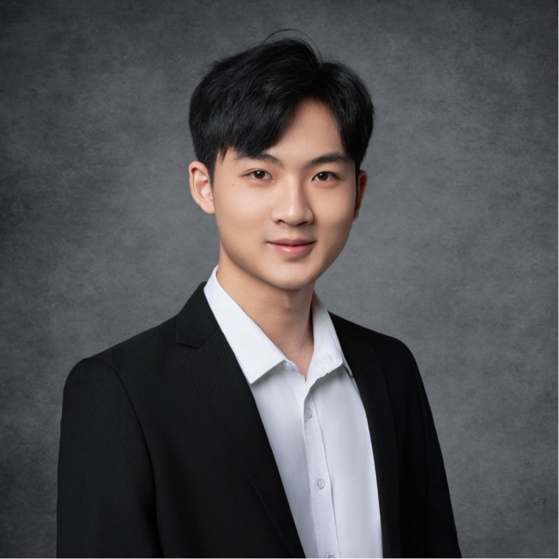

Post-training foundation models基座模型后训练
Taking a capable multimodal model and shaping it, through fine-tuning and RL, into one that reasons well in a specific domain.
拿到一个能力不错的多模态基座模型之后，怎样通过微调和强化学习，让它在具体领域里真正会思考。
PhD student · The University of Hong Kong香港大学 · 博士在读
王一可
I teach foundation models how an economy behaves, then let millions of them loose as agents to see what a whole society does next.
我教基座模型理解经济世界怎么运转，再把成百上千万个智能体放进去，看一整个社会接下来会做什么。

I'm a PhD student at The University of Hong Kong, co-advised by Prof. Ping Luo at MMLab and Prof. Ye Luo at Shenzhen Loop Area Institute (SLAI). Having one advisor in AI and one in economics describes my research pretty well.
I work on post-training multimodal foundation models and on multi-agent systems. Right now I lead the post-training of a foundation model for the economic world, along with our multi-agent RL work.
Before the PhD I was a quant researcher at a private fund, building multi-factor strategies and optimizing portfolios. Markets left me with a lasting curiosity about how real people decide under real constraints, and that is still the question I get up for.
If any of this overlaps with what you're thinking about, write to me. I enjoy a good conversation about research, markets, or a half-formed idea.
Taking a capable multimodal model and shaping it, through fine-tuning and RL, into one that reasons well in a specific domain.
拿到一个能力不错的多模态基座模型之后，怎样通过微调和强化学习，让它在具体领域里真正会思考。
What happens when many agents learn and act at once: cooperation, competition, and the group behavior nobody programmed in.
很多智能体同时学习、同时行动时会发生什么：合作、博弈，以及那些没人事先写进去的群体行为。
Simulating households and markets at the scale of a real society, so policies and products can be tried in silico first.
在接近真实社会的规模上模拟家庭和市场，让政策和产品可以先在仿真里跑一遍。
A simulation framework that grounds half a billion synthetic household personas in real survey data and follows how each financial decision ripples through consumption, cash, debt and repayment over time.
一个社会级多智能体仿真框架：用真实调查数据构建 5 亿个合成家庭画像，并持续追踪每一次金融决策如何影响消费、现金、负债与还款。
A training-free framework that lets a vision-language model reason about which editing tools to call, built to stop an early routing mistake from carrying through the whole editing workflow.
一个无需训练的框架：让视觉语言模型推理该调用哪些编辑工具，避免早期的一次路由错误沿着整条编辑流程传下去。
* equal contribution · † corresponding author* 共同第一作者 · † 通讯作者
The University of Hong Kong · MMLab & Shenzhen Loop Area Institute (SLAI)香港大学 · MMLab 与深圳河套学院（SLAI）
Leading post-training of an economic-world foundation model and multi-agent RL research, advised by Prof. Ping Luo and Prof. Ye Luo.
负责经济世界基座模型后训练与 Multi-Agent RL 研发，导师为罗平教授与罗晔教授。
Private fund私募基金
Researched and built multi-factor strategies, and worked on portfolio optimization.
负责多因子策略研发与组合优化。
05 · Contact05 · 联系我